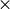

Resolution calculation with Instrument Class¶
Warning
This module is still a work-in-progress and the usage of these classes and/or functions will likely change in the near future.
The following are examples on the usage of the Instrument class, used to define a triple-axis spectrometer instrument configuration and calculate the resolution in reciprocal lattice units for a given sample at a given wave-vector  . This tutorial will cover the utilization of both Cooper-Nathans and Popovici calculation methods.
. This tutorial will cover the utilization of both Cooper-Nathans and Popovici calculation methods.
Instrument Configuration¶
First, we will begin by defining an generic triple-axis spectrometer instrument configuration that we will use for this example.
(Source code, png, hires.png, pdf)
{kind=link}
{kind=link}

For the Cooper-Nathans calculation only a rudimentary set of information is required to estimate the resolution at a given . Namely, the fixed energy (incident or final), the relevant (horizontal) collimations (Col), and the monochromator and analyzer crystal types (or  , if the crystal type is not included in this software). In this case we will use the following values:
, if the crystal type is not included in this software). In this case we will use the following values:
>>> efixed = 14.7
>>> hcol = [40, 40, 40, 40]
>>> ana = 'PG(002)'
>>> mono = 'PG(002)'
The rest of the required information are all dependent on the sample configuration.
Note
Many settings have default values, that don’t need to be changed for the resolution calculation to function, but will provide more accuracy if assigned appropriate values.**
Sample Configuration¶
Defining the sample using the Sample class is simple. In this example we define an arbitrary sample with no given sample mosaic.
>>> from neutronpy.resolution import Sample
>>> sample = Sample(6, 7, 8, 90, 90, 90, u=[1, 0, 0], v=[0, 1, 0])
where the inputs for Sample are a, b, c, alpha, beta, gamma, and mosaic, respectively, and u and v are the orientation vectors in reciprocal lattice units. In this case the sample is oriented in the (h, k, 0)-plane
Initializing the Instrument¶
Once the sample is defined and information about the instrument collected we can formally define the instrument using Instrument and the variables that we have already assigned above.
>>> from neutronpy.resolution import Instrument
>>> EXP = Instrument(efixed, sample, hcol, ana=ana, mono=mono)
There are a great deal more settings available than are used here; see Instrument documentation.
Calculating the resolution¶
To calculate the resolution we need to define at which we want the resolution to be calculated. There are several ways that we can go about doing this. The simplest situation is if the resolution is desired at only one point in reciprocal space, e.g. [1, 0, 0, 0], i.e. (1, 0, 0) at zero energy transfer:
>>> q = np.array([1, 0, 0, 0])
More positions can be easily added; e.g. if we wanted to add (0.5, 0.5, 0) at 0 meV, and (0.5, 0., 0.5) at 8~meV, our q would have the structure:
>>> q = np.array([[1, 0.5, 0.5], [0, 0.5, 0], [0, 0, 0.5], [0, 0, 8]])
We will use this second q to calculate the resolution.
Note
We use np.array() here to allow us to use ‘fancy indexing’, which will simplify using slices of q later.
Resolution parameters¶
To calculate the resolution parameters, without needing projections or plots, one may use calc_resolution:
>>> EXP.calc_resolution(q)
The resulting resolution parameters, and , are saved in the EXP variable and can be accessed by
>>> RMS = EXP.RMS
>>> R0 = EXP.R0
The resolution matrix here is the full matrix, over four dimensional space N (4  4) matrices, with shape (4, 4, N) (N=3 in our case). Alternatively, it is possible to extract more immediately useful parameters, i.e. projections or slices in the plane of interest using get_resolution_params.
We can get projections or slices in the x-y, x-e or y-e planes (see get_resolution_params documentation for all possible keywords); the z-plane is not accessible due to the nature of the sample orientation and is integrated out. In this case we will extract the resolution parameters for the projection into the plane for the first q, i.e. [1,0,0,0]:
>>> R0, RMxx, RMyy, RMxy = EXP.get_resolution_params(q[:, 0], 'QxQy', mode='project')
RMxx and RMyy are the diagonals of the resolution matrix, RMxy is the off-diagonals, and R0 is the pre-factor. An error will be thrown if a q that was not previously calculated is given.
Resolution ellipses¶
The resolution ellipses are calculated when calc_projections is called, and can be accessed using calc_projections, which is a dictionary with the keys QxQy, QxQySlice, QxW, QxWSlice, QyW, and QyWSlice, providing x and y values.
The following is an example of a resolution calculation using the Cooper-Nathans method (for a projection in the plane), with resolution ellipses (projection (filled) and slice (dashed)) overlaid, using the settings we have used in this example.
(Source code, png, hires.png, pdf)
{kind=link}
{kind=link}

Popovici calculation¶
All of the previous sections are still relevant and are necessary for the Popovici method of resolution calculation, but more details about the instrument are required, and the Popovici method must be enabled. The most essential properties that need to be defined are the distances between each major element of the instrument, namely, guide-to-monochromator, monochromator-to-sample, sample-to-analyzer, and analyzer-to-detector. These distances are assigned to the arms property in the above order:
>>> EXP.arms = [1560, 600, 260, 300]
Once this variable is set we can enable the Popovici method and recalculate the resolutions:
>>> EXP.method=1
>>> EXP.calc_resolution(q)
Note
Like with the Cooper-Nathans method above, many of these settings have default values, that don’t need to be changed for the resolution calculation to function, but will provide more accuracy if assigned appropriate values.
The following is an example of a resolution calculation using the Popovici method (for a projection in the plane), with resolution ellipses (projection (filled) and slice (dashed)) overlaid, using the settings used in this example.
(Source code, png, hires.png, pdf)
{kind=link}
{kind=link}

Simple Plotting of Resolution Ellipses¶
To see a simple plot of the resolution ellipses in the , and zones the plot_projections method may be used. This will also display instrument setup parameters and other useful information such as Bragg widths.
A very simple plot for the default instrument, containing resolution ellipses for several different energies at may be obtained with these commands
>>> from numpy import linspace
>>> EXP = Instrument()
>>> EXP.plot_projections([1., 1., 0., linspace(0, 15, 7)])
(Source code, png, hires.png, pdf)
{kind=link}
{kind=link}

Simple Plotting of the 3D Resolution Ellipsoid¶
To see a simple plot of the resolution ellipsoid in the zone the plot_ellipsoid method can be used.
>>> EXP = Instrument()
>>> EXP.plot_ellipsoid([1,1,0,0])
Plotting of the Instrument setup for a given (Q,W)¶
To see a plot of the instrument setup using the angles required for a given  the
the plot_instrument method can be used.
>>> EXP = Instrument()
>>> EXP.plot_instrument([1,1,0,0])
(Source code, png, hires.png, pdf)
{kind=link}
{kind=link}